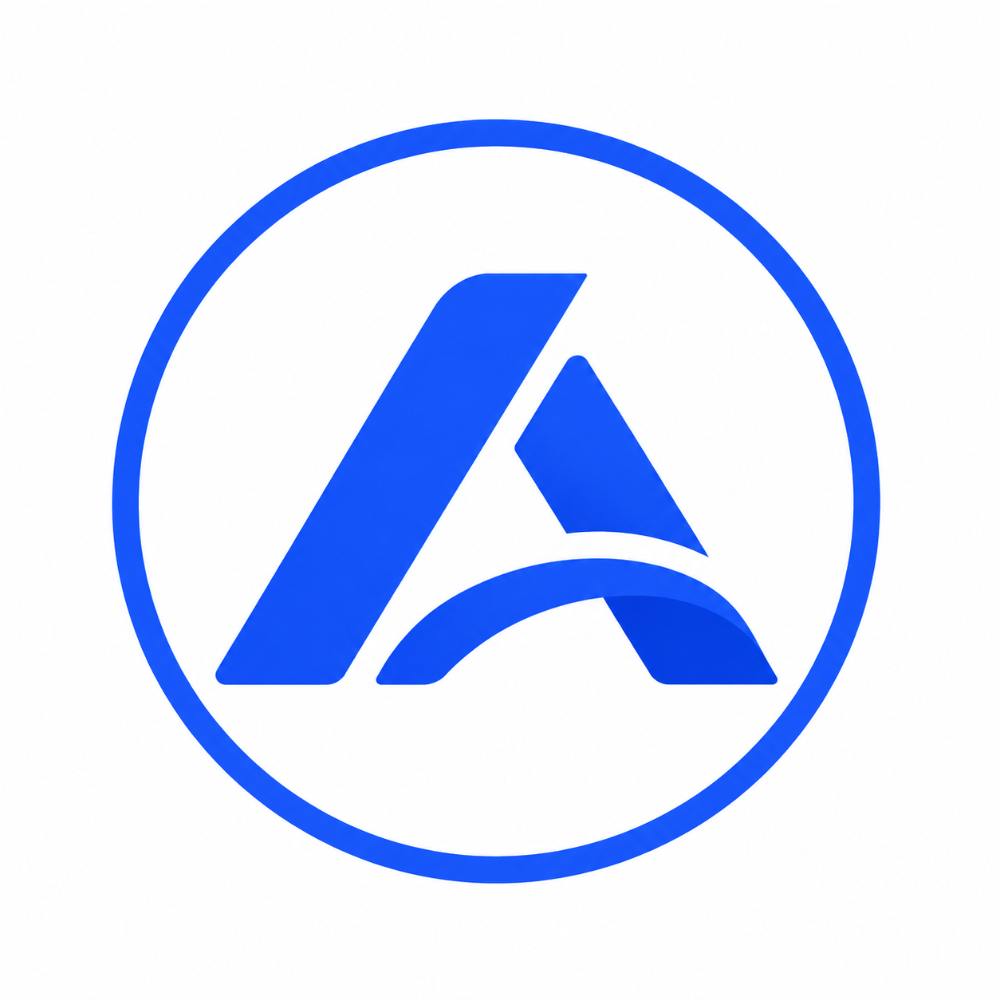
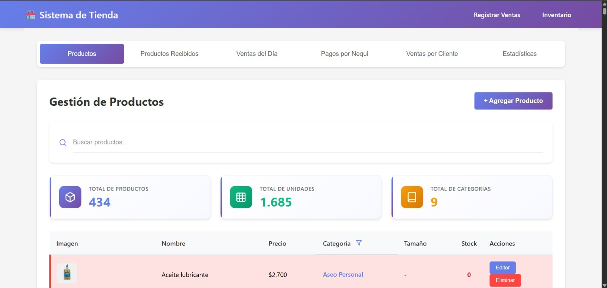
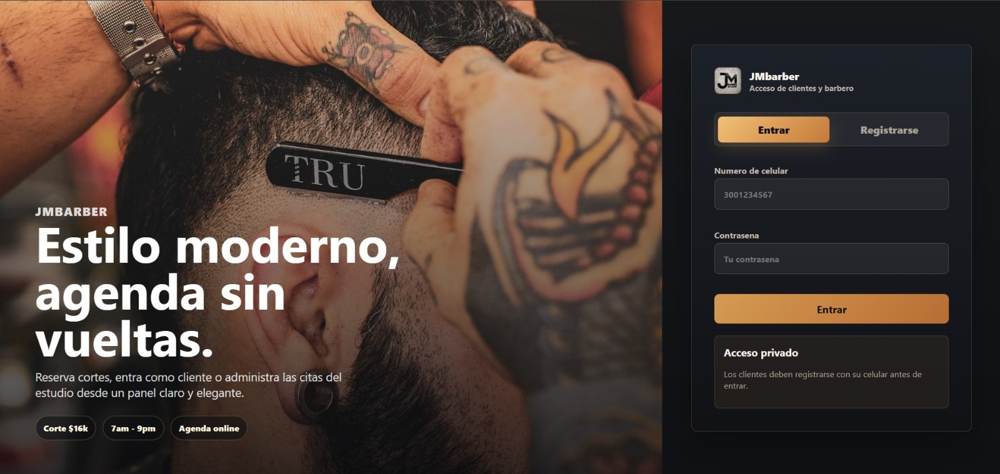
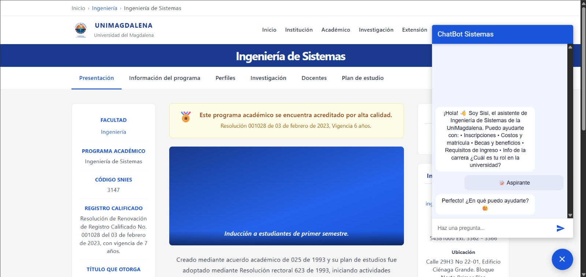

01
AUTOMATIZACIÓN
Automatizamos procesos repetitivos para que tu equipo se enfoque en lo que realmente importa.

ASYS. HABLEMOS ↗EL PRÓXIMO SISTEMA PODRÍA SER EL TUYO
Cuéntanos tu idea y nuestro equipo te ayudará a convertirla en una solución tecnológica de alto impacto.
ASYS TECHNOLOGY S.A.S. / COLOMBIA
Automatización, software e inteligencia aplicada para empresas que prefieren anticipar el futuro.
DISEÑADO PARA
LO QUE SIGUE
NUESTRA ESENCIA
Construimos tecnología
que trabaja para las personas.
01 — SOLUCIONES
Combinamos tecnología, innovación y estrategia para llevar cada negocio al siguiente nivel.
Automatizamos procesos repetitivos para que tu equipo se enfoque en lo que realmente importa.
Creamos aplicaciones web y móviles escalables, modernas y seguras.
Implementamos soluciones inteligentes con IA, automatización y analítica de datos.
Conectamos herramientas y sistemas para crear operaciones unificadas y eficientes.
02 — ECOSISTEMA
Un ecosistema diseñado para que cada parte de tu negocio se mueva con inteligencia.
03 — PROYECTOS
Soluciones reales. Tecnología aplicada.
Resultados que generan impacto.
01 / SOFTWARE DE GESTIÓN

02 / PRODUCTO DIGITAL

03 / INTELIGENCIA ARTIFICIAL

04 / DATA INTELLIGENCE
03.1 — EXPERIENCIAS REALES
Un sistema pensado para tener el inventario, las ventas y el día a día del negocio en un solo lugar.
Una experiencia de agenda moderna que organiza las citas y le da al barbero control de su operación.
Un asistente digital diseñado para orientar a estudiantes y hacer más ágil la atención académica.
04 — VALOR REAL
Procesos manuales
Visión clara
Automatización
Mayor eficiencia
Cada proyecto ASYS parte de una necesidad real, se diseña con precisión y se mide por el cambio que genera en la operación.
05 — NOSOTROS
Una empresa de tecnología e innovación enfocada en transformar procesos, conectar sistemas y convertir ideas en soluciones digitales que generan impacto.
06 — POR QUÉ ASYS
Pensamos más allá de lo convencional.
Cada solución se adapta al negocio.
Construimos con herramientas modernas.
La tecnología debe generar resultados.
EL PRÓXIMO SISTEMA PODRÍA SER EL TUYO
Cuéntanos tu idea y nuestro equipo te ayudará a convertirla en una solución tecnológica de alto impacto.
07 — CONTACTO
Cuéntanos qué quieres construir.